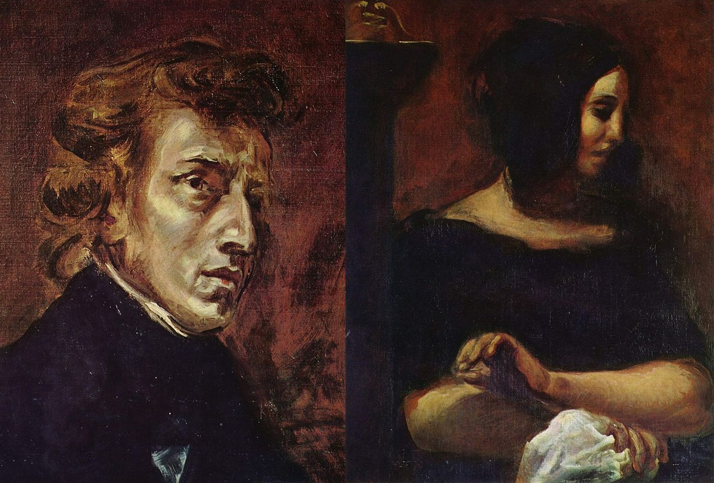

Écrits › Lettres & écrits de compositeurs
Les plus belles lettres d’amour des compositeurs
18 juin 2021

George Sand à Albert Grzymala, à Paris.
[Nohant, juin 1838].
Jamais il ne peut m’arriver de douter de la loyauté de vos conseils, cher ami ; qu’une pareille crainte ne vous vienne jamais. Je crois à votre évangile sans bien le connaître et sans l’examiner, parce que du moment qu’il a un adepte comme vous, il doit être le plus sublime de tous les évangiles. Soyez béni pour vos avis et soyez en paix pour mes pensées. Posons nettement la question une dernière fois, parce que de votre dernière réponse sur ce sujet dépendra toute ma conduite à venir, et puisqu’il fallait en arriver là, je suis fâchée de ne pas avoir surmonté la répugnance que j’éprouvais à vous interroger à Paris. Il me semblait que ce que j’allais apprendre pâlirait mon poème. Et, en effet, le voilà qui a rembruni, ou plutôt qui pâlit beaucoup. Mais qu’importe ! Votre évangile est le mien quand il prescrit de songer à soi en dernier lieu, et de n’y pas songer du tout quand le bonheur de ceux que nous aimons réclame toutes nos puissances. Écoutez-moi bien et répondez clairement, catégoriquement, nettement. Cette personne qu’il veut, ou croit devoir aimer, est-elle propre à faire son bonheur, ou bien doit-elle augmenter ses souffrances et ses tristesses ? Je ne demande pas s’il l’aime, s’il en est aimé, si c’est plus ou moins que moi. Je sais à peu près, par ce qui se passe en moi, ce qui doit se passer en lui. Je demande à savoir laquelle de nous deux il faut qu’il oublie ou abandonne pour son repos, pour son bonheur, pour sa vie enfin, qui me paraît trop chancelante et trop frêle pour résister à de grandes douleurs. Je ne veux pas faire le rôle de mauvais ange. Je ne suis pas le Bertram de Meyerbeer et je ne lutterai point contre l’amie d’enfance si c’est une belle et pure Alice ; si j’avais su qu’il y eût un lien dans la vie de notre enfant, un sentiment dans son âme, je ne me serais jamais penchée pour respirer un parfum réservé à un autre autel. De même, lui sans doute se fût éloigné de mon premier baiser s’il eût su que j’étais comme mariée.
Nous ne nous sommes point trompés l’un l’autre, nous nous sommes livrés au vent qui passait et qui nous a emportés tous deux dans une autre région pour quelques instants. Mais il n’en faut pas moins que nous redescendions ici-bas, après cet embrassement céleste et ce voyage à travers l’Empyrée. Pauvres oiseaux, nous avons des ailes, mais notre nid est sur la terre et quand le chant des anges nous appelle en haut, le cri de notre famille nous ramène en bas. Moi, je ne veux point m’abandonner à la passion, bien qu’il y ait au fond de mon cœur un foyer encore bien menaçant parfois. Mes enfants me donneront la force de briser tout ce qui m’éloignerait d’eux ou de la manière d’être qui est la meilleure pour leur éducation, leur santé, leur bien être, etc.
Ainsi je ne puis pas me fixer à Paris à cause de la maladie de Maurice, etc…, etc… Puis il y a un être excellent, parfait sous le rapport du cœur et de l’honneur, que je ne quitterai jamais parce que c’est le seul homme qui, étant avec moi depuis près d’un an, ne m’ait pas une seule fois, une seule minute, fait souffrir par sa faute. C’est aussi le seul homme qui se soit donné entièrement et absolument à moi, sans regret pour le passé, sans réserve pour l’avenir. Puis, c’est une si bonne et si sage nature, que je ne puisse l’amener avec le temps à tout comprendre, à tout savoir ; c’est une cire malléable sur laquelle j’ai posé mon sceau et quand je voudrai en changer l’empreinte, avec quelque précaution et quelque patience j’y réussirai. Mais aujourd’hui cela ne se pourrait pas, et son bonheur m’est sacré.
Voilà donc pour moi ; engagée comme je le suis, enchaînée d’assez près pour des années, je ne puis désirer que notre petit rompe de son côté les chaînes qui le lient. S’il venait mettre son existence entre mes mains, je serais bien effrayée, car en ayant accepté une autre, je ne pourrais lui tenir lieu de ce qu’il aurait quitté pour moi. Je crois que notre amour ne peut durer que dans les conditions où il est né, c’est-à-dire que de temps en temps, quand un bon vent nous ramènera l’un vers l’autre, nous irons encore faire une course dans les étoiles et puis nous nous quitterons pour marcher à terre, car nous sommes des enfants de la terre et Dieu n’a pas permis que nous y accomplissions notre pèlerinage côte à côte. C’est dans le ciel que nous devons nous rencontrer, et les instants rapides que nous y passerons seront si beaux, qu’ils vaudront toute une vie passée ici-bas.
Mon devoir est donc tout tracé. Mais je puis, sans jamais l’abjurer, l’accomplir de deux manières différentes : l’une serait de me tenir le plus éloignée que possible de C[hopin], de ne point chercher à occuper sa pensée, de ne jamais me retrouver seule avec lui ; l’autre serait au contraire de m’en rapprocher autant que possible sans compromettre la sécurité de M[allefille], de me rappeler doucement à lui dans ses heures de repos et de béatitude, de le serrer chastement dans mes bras quelquefois, quand le vent céleste voudra bien nous enlever et nous promener dans les airs. La première manière sera celle que j’adopterai si la personne est faite pour lui donner un bonheur pur et vrai, pour l’entourer de soins, pour arranger, régulariser et calmer sa vie, si enfin il s’agit pour lui d’être heureux par elle et que j’y sois un empêchement ; si son âme excessivement, peut-être follement, peut-être sagement scrupuleuse, se refuse à aimer deux êtres différents de deux manières différentes, si les huit jours que je passerai avec lui dans une saison doivent l’empêcher d’être heureux, dans son intérieur, le reste de l’année ; alors, oui, alors je vous jure que je travaillerai à me faire oublier de lui. La seconde manière, je la prendrai si vous me dites de deux choses l’une : ou que son bonheur domestique peut et doit s’arranger avec quelques heures de passion chaste et de douce poésie, ou que le bonheur domestique lui est impossible, et que le mariage ou quelque union qui y ressemblât serait le tombeau de cette âme d’artiste ; qu’il faut donc l’en éloigner à tout prix et l’aider même à vaincre ses scrupules religieux. C’est un peu là — je dirai où — que mes conjectures aboutissent. Vous me direz si je me trompe ; je crois la personne charmante, digne de tout amour, et de tout respect, parce qu’un être comme lui ne peut aimer que le pur et le beau. Mais je crois que vous redoutez pour lui le mariage, le lien de tous les jours, la vie réelle, les affaires, les soins domestiques, tout ce qui, en un mot, semble éloigné de sa nature et contraire aux inspirations de sa muse. Je le craindrais aussi pour lui ; mais à cet égard je ne puis rien affirmer et rien prononcer parce qu’il y a bien des rapports sous lesquels il m’est absolument inconnu. Je n’ai vu que la face de son être qui est éclairée par le soleil. Vous fixerez donc mes idées sur ce point. Il est de la plus haute importance que je sache bien sa position afin d’établir la mienne. Pour mon goût, j’avais arrangé notre poème dans ce sens, que je ne saurais rien, absolument rien de sa vie positive, ni lui rien de la mienne, qu’il suivrait toutes ses idées religieuses, mondaines, poétiques, artistiques, sans que j’eusse jamais à lui en demander compte, et réciproquement, mais que partout, en quelque lieu et à quelque moment de notre vie que nous vinssions à nous rencontrer, notre âme serait à son apogée de bonheur et d’excellence. Car, je n’en doute pas, on est meilleur quand on aime d’un amour sublime, et loin de commettre un crime, on s’approche de Dieu, source et foyer de cet amour. C’est peut-être là, en dernier ressort, ce que vous devriez tâcher de lui faire comprendre, mon ami, et ne contrariant pas ses idées de devoir, de dévouement et de sacrifice religieux, vous mettriez peut-être son cœur plus à l’aise. Ce que je craindrais le plus au monde, ce qui me ferait le plus de peine, ce qui me déciderait même à me faire morte pour lui, ce serait de me voir devenir une épouvante et un remords dans son âme ; non, je ne puis (à moins qu’elle ne soit funeste pour lui en dehors de moi) me mettre à combattre l’image et le souvenir d’une autre. Je respecte trop la propriété pour cela, ou plutôt c’est la seule propriété que je respecte. Je ne veux voler personne à personne excepté les captifs aux geôliers et les victimes aux bourreaux, et la Pologne a la Russie ; par conséquent, dites-moi si c’est une Russie dont l’image poursuit notre enfant ; alors je demanderai au ciel de me prêter toutes les séductions d’Armide pour l’empêcher de s’y jeter ; mais si c’est une Pologne, laissez-le faire. Il n’y a rien de tel qu’une patrie, et quand on en a une, il ne faut pas s’en faire une autre. Dans ce cas, je serai pour lui comme une Italie, qu’on va voir, où l’on se plaît aux jours du printemps, mais où l’on ne reste pas, parce qu’il y a plus de soleil que de lits et de tables et que le confortable de la vie est ailleurs. Pauvre Italie ! Tout le monde y songe, la désire ou la regrette ; personne n’y peut demeurer, parce qu’elle est malheureuse et ne saurait donner le bonheur qu’elle n’a pas. Il y a une dernière supposition qu’il est bon que je vous dise. Il serait possible qu’il n’aimât plus du tout l’amie d’enfance et qu’il eût une répugnance réelle pour un lien à contracter, mais que le sentiment du devoir, l’honneur d’une famille, que sais-je ? lui commandassent un rigoureux sacrifice de lui-même. Dans ce cas-là, mon ami, soyez son bon ange ; moi, je ne puis guère m’en mêler ; mais vous le devez ; sauvez-le des arrêts trop sévères de sa conscience, sauvez-le de sa propre vertu, empêchez-le à tout prix de s’immoler, car dans ces sortes de choses (s’il s’agit d’un mariage ou de ces unions qui, sans avoir la même publicité, ont la même force d’engagement et la même durée), dans ces sortes de choses, dis-je, le sacrifice de celui qui donne son avenir n’est pas en raison de ce qu’il a reçu dans le passé. Le passé est une chose appréciable et limitée ; l’avenir, c’est l’infini parce que c’est l’inconnu. L’être qui, en retour d’une certaine somme connue de dévouement, exige le dévouement de toute une vie future, demande une chose inique, et si celui à qui on le demande est bien embarrassé pour défendre ses droits en satisfaisant à la générosité et à l’équité, c’est à l’amitié qu’il appartient de le sauver et d’être juge absolu de ses droits et de ses devoirs. Soyez ferme à cet égard, et soyez sûr que moi qui déteste les séducteurs, moi qui prends toujours parti pour les femmes outragées et trompées, moi qu’on croit l’avocat de mon sexe et qui me pique de l’être, quand il faut, j’ai cependant rompu de mon autorité de sœur et de mère et d’amie plus d’un engagement de ce genre. J’ai toujours condamné la femme quand elle voulait être heureuse au prix du bonheur de l’homme ; j’ai toujours absous l’homme quand on lui demandait plus qu’il n’est donné à la liberté et à la dignité humaine d’engager. Un serment d’amour et de fidélité est un crime ou une lâcheté quand la bouche prononce ce que le cœur désavoue, et on peut tout exiger d’un homme excepté une lâcheté et un crime. Hors ce cas-là, mon ami, c’est-à-dire hors le cas où il voudrait accomplir un sacrifice trop rude, je pense qu’il ne faut pas combattre ses idées, et ne pas violenter ses instincts.
Si son cœur peut, comme le mien, contenir deux amours différents, l’un qui est pour ainsi dire le corps de la vie, l’autre qui en sera l’âme, ce sera le mieux, parce que notre situation sera à l’avenant de nos sentiments et de nos pensées. De même qu’on n’est pas tous les jours sublime, on n’est pas tous les jours heureux. Nous ne nous verrons pas tous les jours, nous ne posséderons pas tous les jours le feu sacré, mais il y aura de beaux jours et de saintes flammes.
Il faudrait peut-être aussi songer à lui dire ma position à l’égard de M[allefille]. Il est à craindre que, ne la connaissant pas, il ne se crée à mon égard une sorte de devoir qui le gêne et vienne à combattre l’autre douloureusement. Je vous laisse absolument le maître et l’arbitre de cette confidence ; vous la ferez si vous jugez le moment opportun, vous la retarderez si vous croyez qu’elle ajouterait à des souffrances trop fraîches. Peut-être l’avez-vous déjà faite. Tout ce que vous avez fait ou ferez, je l’approuve et le confirme.
Quant à la question de possession ou de non-possession, cela me paraît une question secondaire à celle qui nous occupe maintenant. C’est pourtant une question importante par elle-même, c’est toute la vie d’une femme, c’est son secret le plus cher, sa théorie la plus étudiée, sa coquetterie la plus mystérieuse. Moi, je vous dirai tout simplement, à vous, mon frère et mon ami, ce grand mystère sur lequel tous ceux qui prononcent mon nom font de si étranges commentaires. C’est que je n’ai là-dessus ni secret, ni théorie, ni doctrines, ni opinion arrêtée, ni parti-pris, ni prétention de puissance, ni singerie de spiritualisme, rien enfin d’arrangé d’avance et pas d’habitude prise et, je crois, pas de faux principes, soit de licence, soit de retenue. Je me suis beaucoup fiée à mes instincts qui ont toujours été nobles ; je me suis quelquefois trompée sur les personnes, mais jamais sur moi-même. J’ai beaucoup de bêtises à me reprocher, pas de platitudes ni de méchancetés. J’entends dire beaucoup de choses sur les questions de morale humaine, de pudeur et de vertu sociale. Tout cela n’est pas encore clair pour moi. Aussi n’ai-je jamais conclu à rien. Je ne suis pourtant pas insouciante là-dessus ; je vous confesse que le désir d’accorder une théorie quelconque avec mes sentiments a été la grande douleur de ma vie. Les sentiments ont toujours été plus forts que les raisonnements et les bornes que j’ai voulu me poser ne m’ont jamais servi à rien. J’ai changé vingt fois d’idée. J’ai cru par dessus tout à la fidélité, je l’ai prêchée, je l’ai pratiquée, je l’ai exigée. On y a manqué et moi aussi. Et pourtant je n’ai pas senti le remords, parce que j’avais toujours subi dans mes infidélités une sorte de fatalité, un instinct de l’idéal, qui me poussait à quitter l’imparfait pour ce qui me semblait se rapprocher du parfait. J’ai connu plusieurs sortes d’amour : Amour d’artiste, amour de femme, amour de sœur, amour de mère, amour de religieuse, amour de poète, que sais-je ? Il y en a qui sont nés et morts en moi le même jour, sans s’être révélés à l’objet qui les inspirait. Il y en a qui ont martyrisé ma vie et qui m’ont poussée au désespoir, presque à la folie. Il y en a qui m’ont tenue cloîtrée durant des années dans un spiritualisme excessif. Tout cela a été parfaitement sincère. Mon être entrait dans ces phases diverses comme le soleil, disait Sainte-Beuve, entre dans les signes du Zodiaque. À qui m’aurait suivie en voyant la superficie, j’aurais semblé folle ou hypocrite ; à qui m’a suivie, en lisant au fond de moi, j’ai semblé ce que je suis en effet, enthousiaste du beau, affamée du vrai, très sensible de cœur, très faible de jugement, souvent absurde, toujours de bonne foi, jamais petite ni vindicative, assez colère et, grâce à Dieu, parfaitement oublieuse des mauvaises choses et des mauvaises gens.
Voilà ma vie, cher ami, vous voyez qu’elle n’est pas fameuse. Il n’y a rien à admirer, beaucoup à plaindre, rien à condamner par les bons cœurs. J’en suis sûre, ceux qui m’accusent d’avoir été mauvaise en ont menti, et il me serait bien facile de le prouver, si je voulais me donner la peine de me souvenir et de raconter ; mais cela m’ennuie et je n’ai [pas] plus de mémoire que de rancune.
Jusqu’ici j’ai été fidèle à ce que j’ai aimé, parfaitement fidèle en ce sens que je n’ai jamais trompé personne et que je n’ai jamais cessé d’être fidèle sans de très fortes raisons, qui avaient tué l’amour en moi par la faute d’autrui. Je ne suis pas d’une nature inconstante. Je suis au contraire si habituée à aimer exclusivement qui m’aime bien, si peu facile à m’enflammer, si habituée à vivre avec des hommes sans songer que je suis femme, que vraiment j’ai été un peu confuse et un peu consternée de l’effet que m’a produit ce petit être. Je ne suis pas encore revenue de mon étonnement et, si j’avais beaucoup d’orgueil, je serais très humiliée d’être tombée en plein dans l’infidélité du cœur, au moment de ma vie où je me croyais à tout jamais calme et fixée. Je crois que ce serait mal si j’avais pu prévoir, raisonner et combattre cette irruption ; mais j’ai été envahie tout à coup, et il n’est pas dans ma nature de gouverner mon être par la raison quand l’amour s’en empare. [7] Je ne me fais donc pas de reproche, mais je constate que je suis encore très impressionnable et plus faible que je ne croyais. Peu m’importe, je n’ai guère de vanité ; ceci me prouve que je dois n’en avoir pas du tout et ne jamais me vanter de rien, en fait de vaillance et de force. Cela ne m’attriste que parce que voilà ma belle sincérité, que j’avais pratiquée si longtemps et dont j’étais un peu fière, entamée et compromise. Je vais être forcée de mentir comme les autres. Je vous assure que ceci est plus mortifiant pour mon amour-propre qu’un mauvais roman ou une pièce sifflée ; j’en souffre un peu : cette souffrance est un reste d’orgueil peut-être ; peut-être est-ce une voix d’en haut qui me crie qu’il fallait veiller davantage à la garde de mes yeux et de mes oreilles, et de mon cœur surtout. Mais si le ciel nous veut fidèles aux affections terrestres, pourquoi laisse-t-il quelquefois les anges s’égarer parmi nous et se présenter sur notre chemin ?
La grande question de l’amour est donc encore soulevée en moi ! Pas d’amour sans fidélité, disais-je, il y a deux mois, et il est bien certain, hélas ! que je n’ai plus senti la même tendresse pour ce pauvre M[allefille] en le retrouvant. Il est certain que depuis qu’il est retourné à Paris (vous devez l’avoir vu), au lieu d’attendre son retour avec impatience et d’être triste loin de lui, je souffre moins et respire plus à l’aise. Si je croyais que la vue fréquente de C[hopin] dût augmenter ce refroidissement, je sens qu’il y aurait pour moi devoir à m’en abstenir.
Voilà où je voulais [en] venir, c’est à vous parler de cette question de possession, qui constitue dans certains esprits toute la question de fidélité. Ceci est, je crois, une idée fausse ; on peut-être plus ou moins infidèle ; mais quand on a laissé envahir son âme et accordé la plus simple caresse avec le sentiment de l’amour, l’infidélité est déjà consommée, et le reste est moins grave, car qui a perdu le cœur a tout perdu. Il vaudrait mieux perdre le corps et garder l’âme tout entière. Ainsi, en principe, je crois qu’une consécration complète du nouveau lien n’aggrave pas beaucoup la faute ; mais, en fait, il est possible que l’attachement devienne plus humain, plus violent, plus dominant, après la possession. C’est même probable, c’est même certain. Voilà pourquoi, quand on veut vivre ensemble, il ne faut pas faire outrage à la nature et à la vérité, en reculant devant une union complète ; mais quand on est forcé de vivre séparés, sans doute il est de la prudence, par conséquent il est du devoir et de la vraie vertu (qui est le sacrifice) de s’abstenir, je n’avais pas encore réfléchi à cela sérieusement et, s’il l’eût demandé à Paris, j’aurais cédé, par suite de cette droiture naturelle qui me fait haïr les précautions, les restrictions, les distinctions fausses et les subtilités, de quelque genre qu’elles soient Mais votre lettre me fait penser à couler à fond cette résolution-là. Puis, ce que j’ai éprouvé de trouble et de tristesse en retrouvant les caresses de M[allefille], ce qu’il m’a fallu de courage pour le cacher, m’est aussi un avertissement. Je suivrai donc votre conseil, cher ami. Puisse ce sacrifice être une sorte d’expiation de l’espèce de parjure que j’ai commis.
Je dis sacrifice, parce qu’il me sera pénible de voir souffrir cet ange. Il a eu jusqu’ici beaucoup de force ; mais je ne suis pas un enfant. Je voyais bien que la passion humaine faisait en lui des progrès rapides et qu’il était temps de nous séparer. Voilà pourquoi, la nuit qui a précédé mon départ, je n’ai pas voulu rester avec lui et que je vous ai presque renvoyés.
Et puisque je vous dis tout, je veux vous dire qu’une seule chose en lui m’a déplu, c’est qu’il avait eu lui-même de mauvaises raisons pour s’abstenir. Jusque là, je trouvais beau qu’il s’abstînt par respect pour moi, par timidité, même par fidélité pour une autre. Tout cela était du sacrifice et par conséquent de la force et de la chasteté bien entendues. C’était là ce qui me charmait et me séduisait le plus en lui. Mais chez vous, au moment de nous quitter, et comme il voulait surmonter une dernière tentation, il m’a dit deux ou trois paroles qui n’ont pas répondu à mes idées. Il semble faire fi, à la manière des dévots, des grossièretés humaines et rougir des tentations qu’il avait eues, et craindre de souiller notre amour par un transport de plus. Cette manière d’envisager le dernier embrassement de l’amour m’a toujours répugné. Si ce dernier embrassement n’est pas une chose aussi sainte, aussi pure, aussi dévouée que le reste, il n’y a pas de vertu à s’en abstenir. Ce mot d’amour physique dont on se sert pour exprimer ce qui n’a de nom que dans le ciel, me déplaît et me choque, comme une impiété et comme une idée fausse en même temps. Est-ce qu’il peut y avoir, pour les natures élevées, un amour purement physique et, pour des natures sincères, un amour purement intellectuel ? Est-ce qu’il y a jamais d’amour sans un seul baiser et un baiser d’amour sans volupté ? Mépriser la chair ne peut êtresage et utile qu’avec les êtres qui ne sont que chair ; mais avec ce qu’on aime, ce n’est pas du mot mépriser, mais du mot respecter, qu’il faut se servir quand on s’abstient. Au reste, ce ne sont pas là les mots dont il s’est servi. Je ne me les rappelle pas bien. Il a dit, je crois, que certains faits pouvaient gâter le souvenir. N’est-ce pas, c’est une bêtise qu’il a dite, et il ne le pense pas ? Quelle est donc la malheureuse femme qui lui a laissé de l’amour physique de pareilles impressions ? Il a donc eu une maîtresse indigne de lui ? Pauvre ange. Il faudrait pendre toutes les femmes qui avilissent aux yeux des hommes la chose la plus respectable et la plus sainte de la création, le mystère divin, l’acte de la vie le plus sérieux et le plus sublime dans la vie universelle. L’aimant embrasse le fer, les animaux s’attachent les uns aux autres par la différence des sexes. Les végétaux obéissent à l’amour, et l’homme, qui seul sur ce monde terrestre a reçu de Dieu le don de sentir divinement ce que les animaux, les plantes et les métaux sentent matériellement, l’homme chez qui l’attraction électrique se transforme en une attraction sentie, comprise, intelligente, l’homme seul regarde ce miracle qui s’accomplit simultanément dans son âme et dans son corps comme une misérable nécessité, et il en parle avec mépris, avec ironie ou avec honte ! Cela est bien étrange. Il est résulté de cette manière de séparer l’esprit de la chair qu’il a fallu des couvents et des mauvais lieux.
Voici une lettre effrayante. Il vous faudra six semaines pour la déchiffrer. C’est mon ultimatum. S’il est heureux ou doit être heureux par elle, laissez-le faire. S’il doit être malheureux, empêchez-le. S’il peut être heureux par moi sans cesser de l’être par elle, moi je puis faire de même de mon côté. S’il ne peut être heureux par moi sans être malheureux avec elle, il faut que nous nous évitions et qu’il m’oublie. Il n’y a pas à sortir de ces quatre points. Je serai forte pour cela, je vous le promets ; car il s’agit de lui, et si je n’ai pas grande vertu pour moi-même, j’ai grand dévouement pour ce que j’aime. Vous me direz nettement la vérité ; j’y compte et je l’attends. Il est absolument inutile que vous m’écriviez une lettre ostensible. Nous n’en sommes pas là, M[allefille] et moi. Nous nous respectons trop pour nous demander compte, même par la pensée, des détails de notre vie. Il est impossible que Mme Dorval ait les raisons que vous lui supposez. Elle est plutôt légitimiste (si elle a une opinion) que républicaine. Son mari est carliste. Vous aurez été chez elle aux heures de ses répétitions ou de son travail. Une actrice est difficile à joindre. Laissez faire, je lui écrirai et elle vous écrira. Il a été question pour moi d’aller à Paris, et il n’est pas encore impossible que mes affaires, dont M[allefille] s’occupe maintenant, venant à se prolonger, j’aille le rejoindre. N’en dites rien au petit. Si j’y vais, je vous avertirai et nous lui ferons une surprise. Dans tous les cas, comme il vous faut du temps pour obtenir la liberté de vous déplacer, commencez vos démarches, car je vous veux à Nohant cet été, le plus tôt et le plus longtemps possible. Vous verrez que vous vous y plairez ; il n’y a pas un mot de ce que vous craignez. Il n’y a pas d’espionnage, pas de propos, il n’y a pas de province ; c’est une oasis dans le désert. Il n’y a pas une âme dans le département qui sache ce que c’est qu’un Chopin ou un Grzymala. Nul ne sait ce qui se passe chez moi. Je ne vois que des amis intimes, des anges comme vous, qui n’ont jamais eu une mauvaise pensée sur ce qu’ils aiment. Vous viendrez, mon cher bon, nous causerons à l’aise et votre âme abattue se régénérera à la campagne. Quant au petit, il viendra s’il veut ; mais, dans ce cas-là, je voudrais être avertie d’avance, parce que j’enverrai M[allefille] soit à Paris, soit à Genève. Les prétextes ne manqueront pas et les soupçons ne lui viendront jamais. Si le petit ne veut pas venir, laissez-le à ses idées ; il craint le monde, il craint je ne sais quoi. Je respecte chez les êtres que je chéris tout ce que je ne comprends pas. Moi, j’irai à Paris en septembre avant le grand départ. Je me conduirai avec lui selon ce que vous allez me répondre. Si vous n’avez pas la solution des problèmes que je vous pose, tâchez de la tirer de lui, fouillez dans son âme, il faut que je sache ce qui s’y passe.
Mais maintenant vous me connaissez à fond. Voici une lettre comme je n’en écris pas deux en dix ans. Je suis si paresseuse et je déteste tant à parler de moi. Mais ceci m’évitera d’en parler davantage. Vous me savez par cœur maintenant et vous pouvez tirer à vue sur moi quand vous réglerez les comptes de la Trinité.
À vous, cher bon, à vous de toute mon âme, si je ne vous ai pas parlé de vous en apparence dans toute cette longe causerie, c’est qu’il m’a semblé que je parlais de moi, à un autre moi, le meilleur et le plus cher des deux, à coup sûr.
George Sand